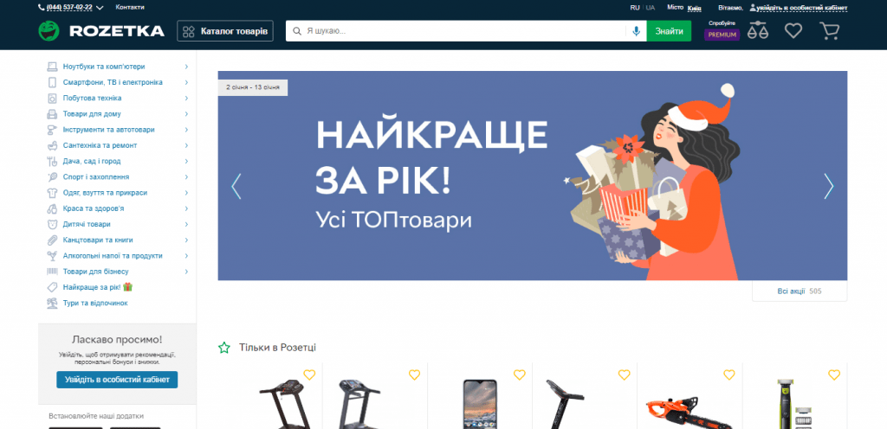
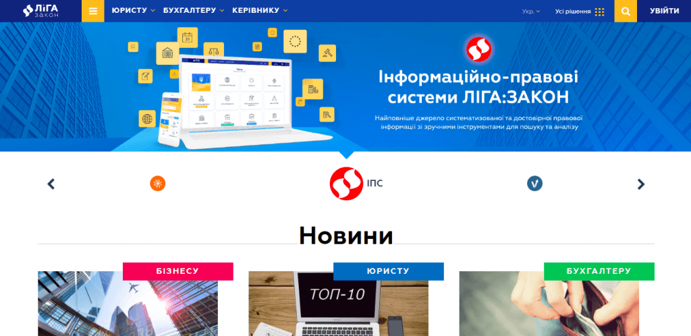
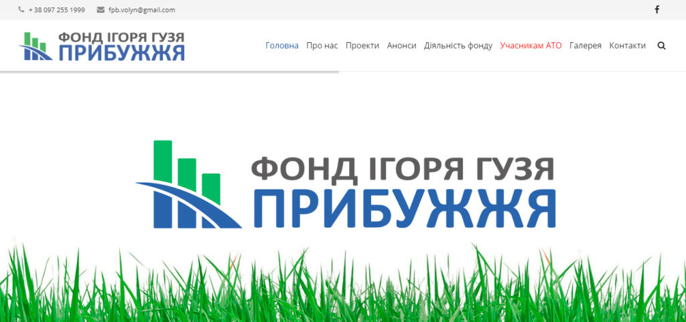
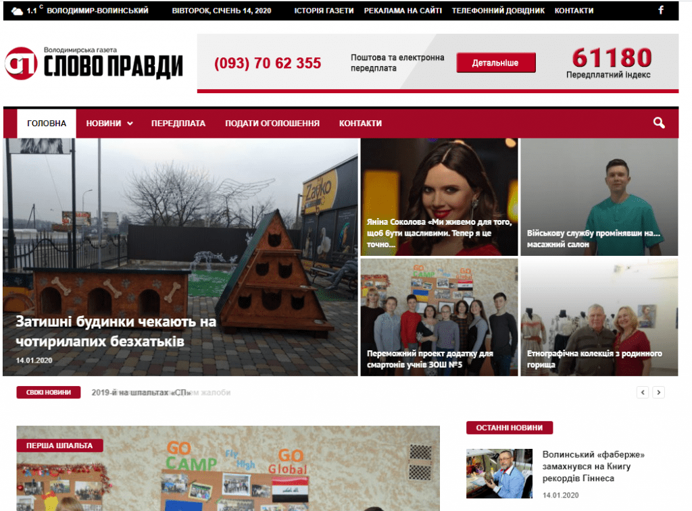

Якщо ви – підприємець, і сайт вам потрібен як допоміжний інструмент для вашого бізнесу, то дуже важливо, щоб вас не прийняли за лоха, коли ви замовляєте сайт. А для цього потрібно чітко розуміти, що за тип сайту вам потрібен. Ця стаття допоможе вам.
Якщо ви – веб-майстер, то ви розумієте, що в статейніках конкуренція шалена, і треба б подумати про те, щоб не класти яйця в одну корзину, а пробувати працювати і в інших напрямках. Для цього потрібно визначитися, який вид сайту у вас буде. Ми допоможу цією статтею і вам, чуваки.
Отже, класифікація сайтів.
1.Технічний поділ
Перш за все, говорячи про класифікацію веб-сайтів, потрібно відзначити, що вони бувають по-різному реалізовані з технічної точки зору.
HTML
HTML-сайти, або, як їх ще називають, статичні – це найстаріший вид. Їх робили, коли ще не було цих ваших CMS, і суворі верстальники верстали кожну сторінку вручну (ну, копіюючи якусь частину коду, не без цього). Вносити зміни і створювати сторінки на таких сайтах проблематично – потрібно розбиратися в верстці або наймати верстальника. Зате вони створюють мінімальне навантаження на сервер і дуже швидкі.
CMS
Сайти на CMS, або, як їх ще називають, динамічні сайти, зроблені на движку (WordPress, Drupal, Joomla і так далі). Ними зручно управляти через адмінку, причому управління ними не вимагає якихось технічних особливих знань і доступне навіть школярам (найнещаднішим людям на землі). Під них пишуться спеціальні плагіни, розробка яких для HTML-ресурсів вилилася б у чималі витрати. Коротше, цей вид технічної реалізації сьогодні переважає.
Flash
Про цей “олд-скул” я навіть говорити не буду. Все, що вам потрібно знати про Flash-сайти, так це те, що в наш час їх роблять лише “упороті”.
2.Комерційні
Основне джерело доходу для дизайнерів, верстальників, сеошників – власники бізнесу. Їм потрібно продати товар або послугу, або випендритися тим, що у них є сайт. На основі цих потреб сформувався пласт комерційних ресурсів. Від інформаційних вони відрізняються тим, що в результаті взаємодії з ними можна витратити гроші: купити щось, або замовити, або взяти платну консультацію.
Інтернет-магазини
Інтернет-магазин – це сайт, на якому можна купити який-небудь товар. На них зазвичай є кнопки «купити» і «додати в кошик». Інформація про доставку, номери телефонів і всі інші фактори комерційного ранжирування зазвичай теж є. Основний обіг грошей в інтернеті забезпечують саме ці портали.
Типовий приклад величезного інтернет-магазину – Розетка. Там продають все.

Для кого: для тих, хто займається торгівлею. Можливо навіть має свій магазин, фізичний.
Сайти послуг
На цих веб-ресурсах зазвичай немає кнопки «купити», так як послугу на полицю не поставиш. Це сайти, які містять на своїх сторінках інформацію про послуги, що надаються – про вартість стрижки, про оренду катамарана, про вивезення сміття і так далі.
Типовий приклад сайту послуг – це портал юридичних послуг «Ліга закон».

Для кого: для тих, хто займається наданням послуг, і, як не дивно, для постачальників товару теж може мати сенс робити саме такий ресурс.
Landing Page
Лендінг – це веб-сторінка, мета якої – максимально ефективно продати товар або послугу.
Landing Page зазвичай оформляється дуже красиво, щоб привернути увагу і змусити користувача:
- Залишитися на сторінці
- Дочитати до кінця
- Купити щось
На таких сторінках зазвичай набувають особливої важливості такі метрики, як показник відмов або глибина прокрутки.
Часто робиться в рамках сайту, але іноді і зовсім окремо.
Для кого: для просунутих бізнесменів, які займаються продажами в інтернеті всерйоз і хочуть отримати від цього джерела максимальну віддачу.
Візитки
Сайт-візитка – це сайт, де розміщена інформація про людину / компанію. Буває важко виявити межу між візитками і сайтами послуг, тому що часто одне плавно перетікає в інше. Сюди ж можна віднести і різноманітні онлайн-портфоліо.

Для кого: для тих, кому потрібен сайт «щоб був». Так би мовити, для більшої авторитетності.
3.Інформаційні
Новинні
Нововинні – це сайти, що складаються здебільшого зі сторінок з короткими, актуальними недовгий час текстами, також відомими як «новини». Вони збирають в основному подієвий трафік, і вимагають постійної, щоденної роботи над собою. Ви повинні постійно їх наповнювати. Але трафіку в новинах багато. І іноді він буває дорогий, так що у веб-майстрів, які клепають новинні сайти, буває іноді то порожньо, то дуже густо.

“Вест Стрім” – створення сайтів та інтернет-магазинів. Більше 7 років роботи та десятки проектів. Ми пропонуємо швидкі і функціональні рішення для бізнесу. Наші сайти працюють на модульній платформі, що дозволяє розширювати і покращувати сайт без обмежень. Сайти створені нами мають високу продуктивність і здатні витримувати великі навантаження.